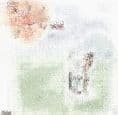

はじまり-ナゴムオムニバス2
（NG-25）（NG-81）86年6月発売（CDは92年10月25日）。
トップ
＞はじまり-ナゴムオムニバス2

※注 歌詞は不掲載。作詞・作曲クレジットをクリックしたところで別になんの表示も・・・
A1(S1) 私はみまちゃん/空手バカボン
B3(S10) のんきな兄さん/空手バカボン
他の出演バンドは有頂天、木魚、グレイトリッチーズ、オレンジチューブ。
空手チョップをもう一度。TOPへ
はてなブックマークの情報を読み込んでいます。